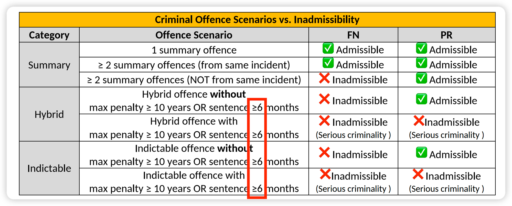
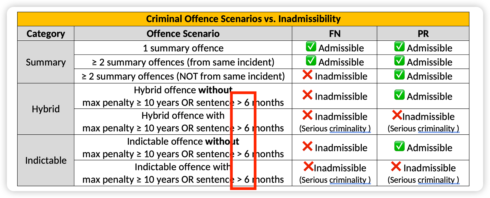

Updates of THE EPE CHEATSHEET (Plus Edition)
Last updated: 2026-08-20
Table of Contents
Standard
Plus Only
No plus-only updates yet.
Standard Updates
Update #s1 — Serious Criminality sentence threshold: ≥6 months → >6 months
Original Content

Updated Content

6 months threshold" class="update-img">Explanation
The term Serious Criminality is used in two distinct contexts in IRPA, and the sentence threshold is very subtly different in each:
| Serious Criminality — Threshold by Context | |||
|---|---|---|---|
| Context | Provision | Sentence threshold (in Canada) | Meaning |
| Inadmissibility | IRPA s. 36(1)(a) | > 6 months | A sentence of exactly 6 months does NOT trigger inadmissibility for serious criminality |
| Loss of IAD appeal right | IRPA s. 64(2) | ≥ 6 months | A sentence of exactly 6 months DOES strip the IAD appeal right |
The key takeaway: A sentence of exactly 6 months sits in the gap — the person is not inadmissible for serious criminality under IRPA s. 36(1)(a), but if they are inadmissible through the other limb (max ≥ 10 years), they also lose their IAD appeal right under IRPA s. 64(2).
| Serious Criminality — Scenario Examples | |||
|---|---|---|---|
| Max penalty | Actual sentence | Inadmissible for Serious Criminality? (IRPA s. 36(1)(a)) | Has IAD Appeal Right? (IRPA s. 64(2)) |
| ≥ 10 yrs | < 6 months (e.g. 3 months) |
✅ Yes (max ≥10 yrs limb) | ✅ Yes (s.64 not triggered) |
| = 6 months exactly | ✅ Yes (max ≥10 yrs limb) | ❌ No (≥6 months, s.64 strips appeal) | |
| > 6 months (e.g. 7 months) |
✅ Yes (both limbs) | ❌ No (≥6 months, s.64 strips appeal) | |
| < 10 yrs | < 6 months (e.g. 3 months) |
❌ No (neither limb met) | N/A (s.64 not engaged) |
| = 6 months exactly | ❌ No (neither limb met) | N/A (s.64 not engaged) | |
| > 6 months (e.g. 7 months) |
✅ Yes (>6 months limb) | ❌ No (≥6 months, s.64 strips appeal) | |